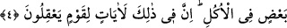

Ayrıca bu meyvede, çeşitli tabiatlara sahip bir takım cisimler meydana gelmektedir.
Meselâ cevizin dört çeşit kabuğu vardır. En üst kabuk, bunun altındaki odunumsu
kabuk, bunun altında bulunan cevizin öz kısmını kuşatan kabuk ve bu kabuktan ayrı son
derece ince bir başka kabuk. Elbette bu dört kabuk ceviz ve badem henüz taze olduğu
hallerde görülebilir.
Yine tek bir meyvede çeşitli tabiatlar da hâsıl olabilir. Meselâ, üzüm ile çekirdeği
soğuk ve kuru iken, etli kısmı ile suyu sıcak ve yaştır.
İşte yıldızlarla gezegenler aynı tesiri yapmasına rağmen tek bir tohumdan çeşitli
tabiatların doğması mutlaka son derece güçlü ve hikmet sahibi bir varlığın çekip
çevirmesinden dolayı olmalıdır.
Gece ile gündüze gelince, bunların değişmesinde ve var oluşunda bulunan alâmet,
gâyet âşikârdır.
4. Yeryüzünde birbirine komşu kıtalar, üzüm bağları, ekinler, bir kökten ve çeşitli
köklerden dallanmış hurma ağaçları vardır. Bunların hepsi bir su ile sulanır. (Böyle
iken) yemişlerinde onların bir kısmını bir kısmına üstün kılarız. İşte bunlarda
akıllarını kullanan bir toplum için ibretler vardır.
“Yeryüzünde birbirine komşu kıtalar,” yani bitişik bölgeler vardır. Bu bölgelerden
bazısı verimli olup bir takım bitkiler bitirirken bazı bölgeler çorak olup bir şey
bitirmez. Bazı bölgelerin ürünü azdır. Bâzısı serttir. Bazı bölgelerin ürünü boldur.
Bazısı yumuşaktır. Bazı bölgeler ağaç yetiştirmeye değil ziraata elverişli iken, bazı
bölgeler tersinedir. Şâyet fiillerini mutlaka gerçekleştiren, son derece güçlü bir varlığın
bunları öyle değil de böyle yapması tahsis olmamış olsaydı, bütün bu bölgeler, toprak
olmak hasebiyle aynı oldukları için böyle ayrı özelliklerde olmazlardı.
“Üzüm bağları,” Arapların üzüme “el-Kerm (cömert)” demeleri, üzümün meyvesinin
çok oluşu, koparılmak için gâyet aşağıda olması, dikeni olmaması, üzerine çıkmanın
kolay olması, yaş ve kuru olarak yenebilmesi sebebiyledir.
el-Kerm kelimesinde asıl olarak çokluk ve hayrı câmî olma mânâları vardır.
İnsanlarda da çok sayıda hayırlı haslet bulunduğu zaman “kerem sâhibi” diye
adlandırılır.
Bilesin ki mü’minin kalbi, içerisinde imân nûru olması hasebiyle bu ismi almaya daha
lâyıktır. Bu sebeple Hz. Peygamber (a.s.) şöyle buyurmuştur: “Sizden biriniz (üzüme)
“kerm” demesin. Çünkü kerm mü’minin kalbidir.”[105]